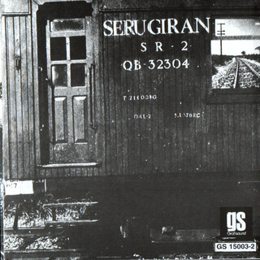
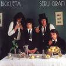
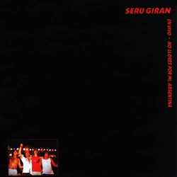
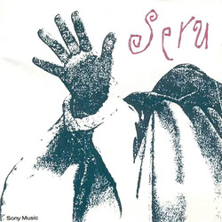
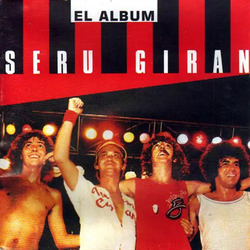
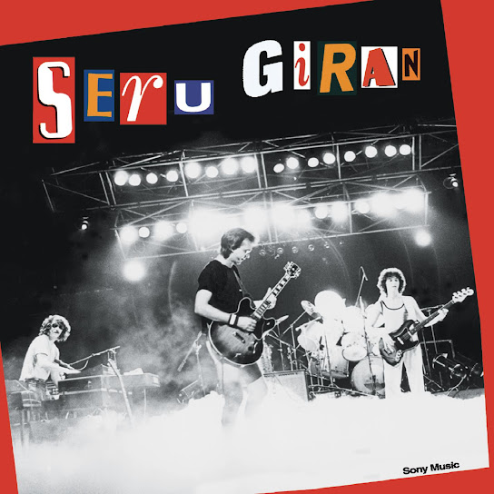
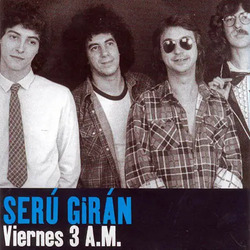
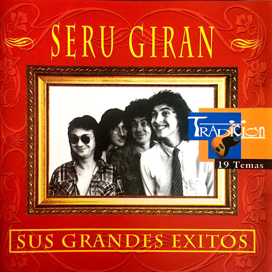

SERÚ GIRAN
-
SERU GIRAN (1978)
-
LA GRASA DE LAS CAPITALES (1979)

-
BICICLETA (1980)
-
PEPERINA (1981)

-
NO LLORES POR MI, ARGENTINA (1982)
-
SERÚ 92 (1992)
-
EN VIVO (1993)

-
ORO (1995)

-
EL ALBÚM (1996)
-
YO NO QUIERO VOLVERME TAN LOCO (2000)
-
VIERNES 3AM (2000)
-
GRANDES ÉXITOS (2009)